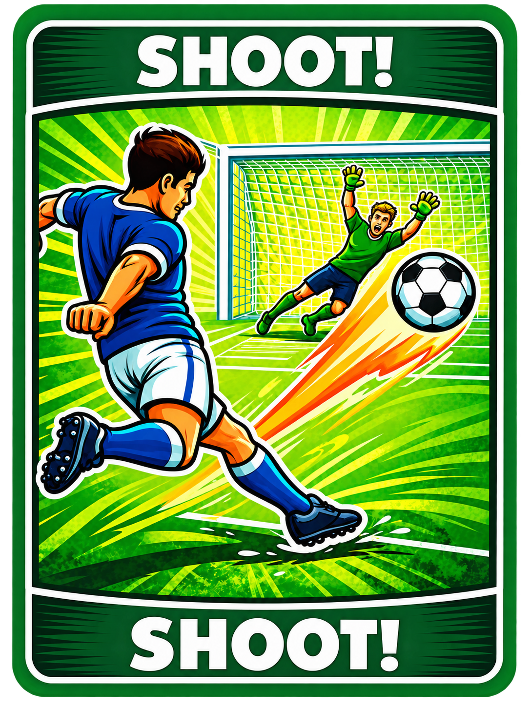
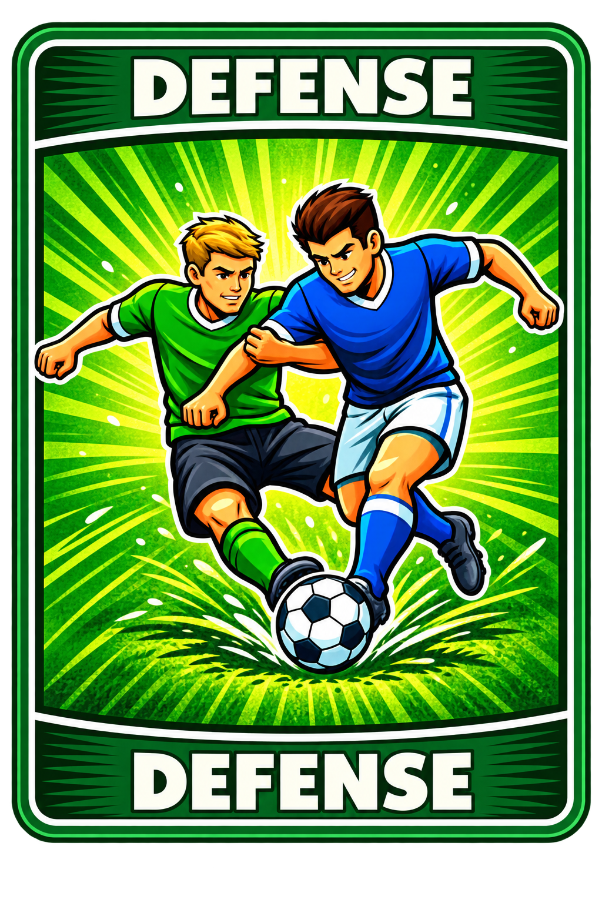
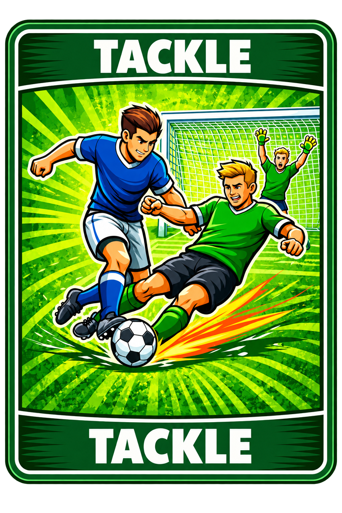
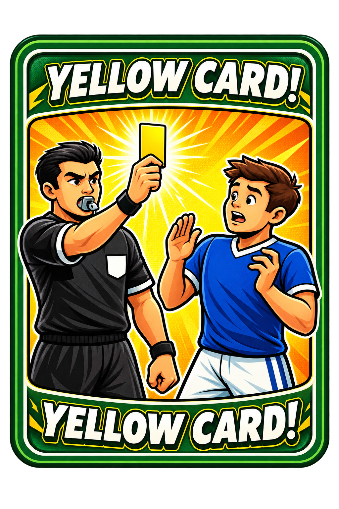

1 — Goal of the Game
Your team wins the moment the opposing Goalkeeper is eliminated. A successful goal gives the targeted player 1 Soccer Token. Normal Players are eliminated at 3 Tokens. Roles stay hidden at 0–1 Tokens and are revealed immediately at 2 Tokens.
2 — Setup

SOCCER CARD = POSSESSION
Keep this card separate from the Action deck. Whoever has this card currently has possession.
- Split into Blue and Green teams as evenly as possible.
- Each team has exactly 1 Goalkeeper; all others are Players.
- Shuffle Action Cards and deal 5 to each player.
- Put the remaining Action Cards face down as the Draw Pile.
- Keep the Soccer Card separate. It shows possession and is never shuffled into the Action deck.
- Use Rock–Paper–Scissors to decide the first side. The winning side starts and receives the Soccer Card.
3 — Fixed Turn Order
Set one circular order before the game. Alternate teams when possible.
Possession does not change the turn order. PASS does not give the receiver an immediate turn.
4 — Your Normal Turn
- Draw 1 Action Card first, unless YELLOW skips your turn.
- Check who has the Soccer Card.
- Play any legal actions you want. You may play multiple legal actions in one turn.
- Fully finish an attack/reaction chain before beginning another action.
- PASS, scoring, being defended, TACKLE, or losing possession does not automatically end your turn.
- When finished, announce that your turn is over and move to the next living player.
5 — Action Cards
PASS
On your own turn, if you have the Soccer Card, give it to a living teammate. Your turn continues.
PASS is an action — there is no separate PASS card.
SHOOT
On your own turn, you must have the Soccer Card. Choose one living opponent. Give the defending team a chance to react.

DEFENSE
The target or any living teammate may play it. If several players can defend, the target and living teammates discuss and choose who actually plays the card. A successful DEFENSE stops the goal and the Soccer Card goes to the player who actually used DEFENSE.

DRIBBLE PAST
In Strategy Mode it is used after the first DEFENSE to beat that DEFENSE and continue the same attack. It does not look at the top of the deck.
SECOND DEFENSE
After DRIBBLE PAST, the target and living teammates discuss again and any one of them may play the second DEFENSE. If that defender still has cards after playing DEFENSE, discard 1 additional card. If playing DEFENSE leaves the hand at 0, no extra discard is required.

TACKLE
On your own turn, take the Soccer Card from the player who currently has it. DEFENSE cannot stop TACKLE. Your turn continues.

YELLOW CARD
YELLOW affects the next living player in the fixed turn order. You do not choose the target. Full details are in Section 7.
6 — Every Main Attack Result
Target +1 Token. Soccer Card → the player who was scored on.
0 Tokens. Soccer Card → the player who actually played the successful DEFENSE.
Target +1 Token. Soccer Card → the player who was scored on.
0 Tokens. Soccer Card → the player who actually played the successful second DEFENSE.
7 — YELLOW CARD
YELLOW CARD
YELLOW affects the next living player in the fixed turn order. You do not choose the target.
- The next player is skipped even if that player is your teammate.
- The skipped player does not draw a card.
- The skipped player cannot take normal on-turn actions: no PASS, SHOOT, TACKLE, DRIBBLE PAST, or other normal turn action.
- The skipped player is still alive and may still use DEFENSE as a reaction if their team is attacked.
- After that skipped seat, continue to the next living player.
8 — Tokens, Reveal, Elimination & Goalkeeper
- 0 Tokens: alive, role hidden.
- 1 Token: alive, role hidden.
- 2 Tokens: reveal the role immediately.
- Normal Player: the next successful third Token eliminates that Player. Discard the eliminated player's whole hand and skip that seat forever.
- Goalkeeper: after the second Token, reveal the Goalkeeper and arm the passive automatically.
9 — What If Something Runs Out?
Draw Pile empty: take all Action Cards in the Discard Pile, shuffle them, make a new face-down Draw Pile, then draw normally. Never shuffle Role Cards, Soccer Card, Soccer Tokens, cards in players' hands, or cards currently being resolved.
You have 0 cards: you are still in the game. On your next normal turn you still draw 1 first. If you have the Soccer Card, you may PASS even with no Action Cards. If after drawing you still have no legal action, end your turn normally.
Second DEFENSE with only one card: legal. If the only card is DEFENSE, play it; your hand becomes 0 and you do not discard an extra card.
10 — Quick FAQ
- Can a teammate DEFENSE for me? Yes, any living teammate can.
- Who chooses the defender? The target and living teammates discuss and choose one player.
- Must the same person make both DEFENSE plays? No.
- Can DEFENSE stop TACKLE? No.
- Can YELLOW skip my teammate? Yes.
- Can a YELLOW-skipped player DEFENSE? Yes, because DEFENSE is a reaction.
- Does PASS change whose turn it is? No.
- Does losing possession end my turn? No.